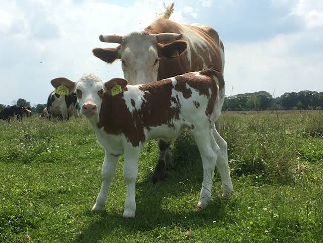

Kennisplatform voor dierstudenten
Ontdek de wereld van runderen
Van anatomie en gedrag tot voeding, gezondheid en huisvesting. Leer meer over runderen op een duidelijke en interactieve manier.
Ontdek runderen →
Kalf
De eerste levensfase
1 / 4
Runderenwijzer
Waar wil je meer over weten?
Gebruik de onderwerpen hieronder om snel naar de informatie te gaan die je zoekt.
🔎
Rassen
Ontdek verschillende runderrassen en hun kenmerken.
🧬Anatomie
Leer hoe het lichaam van een rund is opgebouwd.
🧠Gedrag
Leer runderen beter begrijpen aan de hand van hun gedrag.
🌾Voeding
Ontdek wat runderen eten en hoe herkauwen werkt.
❤️Gezondheid
Leer waarop je let bij een gezond rund.
🏡Huisvesting
Bekijk verschillende manieren waarop runderen worden gehuisvest.
🌍Rundveehouderij
Maak kennis met melkvee, vleesvee en de dagelijkse praktijk.
💡Weetjes
Korte en interessante feiten over runderen.